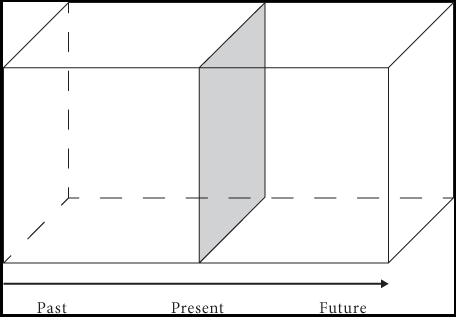
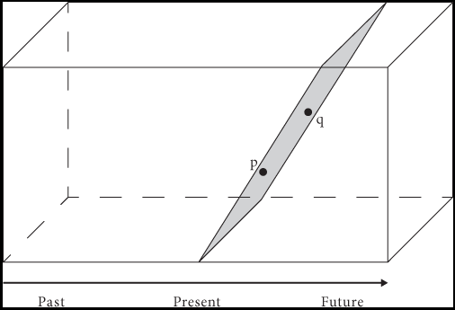
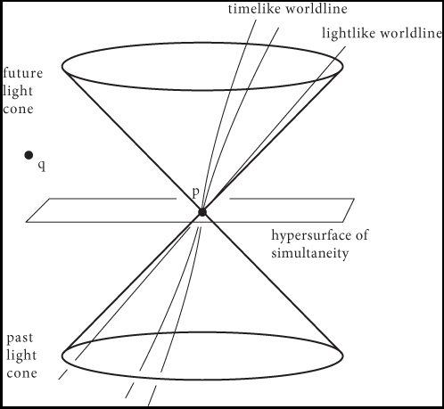

3 A-Theories
We have drawn a distinction between A- and B-Theories of time in terms of their attitude to two questions on tense and ontology, respectively:
- Are there objective differences between past, present, and future?
- Are present events and objects more real than past and future events and objects?
In line with (McTaggart 1908), A-theorists make a distinction between three putative facts:
The lecture will be underway
The lecture is now underway
The lecture was underway
These are all different facts in that they attribute a genuine property to one and the same event. These facts correspond to the lecture being future, becoming present, and coming to be past. These are objective and irreducible features of the world. Reality is irreducibly tensed and involves change.
3.1 Competing Versions of the A-Theory
Competing versions of the A-Theory are united by the commitment to objective differences between past, present, and future, but they may differ with respect to the second question.
3.1.1 Presentism
Presentists claim that only present events and objects exist. Consider what happens when an event is over and comes to be past. When a lecture is over, for example, it has come to be past and it no longer exists. Nor do future events yet exist. Why we will be on break in March, the break does not exist yet. Only present events exist, e.g., your reading this very sentence. Future events and objects do not exist, though they will come into existence, even if ever so briefly, and past events and objects do not exist, though they used to exist, even if ever so briefly.
3.1.2 Moving Spotlight Theory
Presentism is not forced upon the A-Theory merely by their attitude towards the distinction between past, present, and future. Some A-theorists may note that for the lecture to become present, it must have been something that used to be future but not present. More generally, you may think that for one to anticipate or look forward to an event that has not yet come to be present, the event must have enjoyed some being. Likewise for past events. For one to miss or perhaps regret a past event, the event must still enjoy being. Otherwise, there is nothing for one to miss or two regret. So, one could be an A-Theorist and nonetheless accept the reality of past and future events and objects.
The world forms a four-dimensional manifold, which includes past, present, and future events and objects, but only some of those events and objects are present at each given time. The present is very much like a moving spotlight playing over a four-dimensional manifold. The metaphor is due to (Broad 1959), who writes in p. 59:
We are naturally tempted to regard the history of the world as existing eternally in a certain order of events. Along this, and in a fixed direction, we imagine the characteristic of presentness as moving, somewhat like the spot of light from a policeman’s bull’s-eye traversing the fronts of houses in a street. What is illuminated is the present, what has been illuminated is the past, and what has not yet illuminated is the future.
The moving spotlight theory agrees with the B-Theory that the universe forms a four-dimensional manifold, but adds that some are past, some present, and some future. Furthermore, present events and objects are special in that they are lit up in some way.
3.1.3 Growing Block Theory
(Broad 1959) did not endorse the Moving Spotlight theory but rather accepted the reality of past and present events and objects, just not future ones. Both past and present events and objects have come into existence, whereas future ones are nothing yet. There is a brief difference between past and present events and objects in that unlike past events, present events precede no other events:
The essence of a present event is not, that it precedes future events, but that there is quite literally nothing to which it has the relation of precedence.
(Zimmerman 2005) argues that you should be presentist if you are an A-theorist. For both Growing Block and Moving Spotlight theorists face uncomfortable questions. If past or future events and objects are still part of the furniture of the world, then why does it matter whether they are past or future?
Why exactly should I look forward to a pleasant experience if the experience is part of the world and it is pleasant whether it is lit up or not by the moving spotlight?
I look forward to a pleasant experience while the experience is future and not yet lit up, but I come to take another attitude toward one and the same event when the event is lit up and yet another once it becomes past.
Why exactly should I be glad that a painful event is over if the event is part of the world and painful whether it is lit up or not by the moving spotlight?
I come to be relieved that the event is over once it becomes past and no longer lit up, but I used to dread the event before it lit up and suffered through it while being hit by the spotlight.
There is, according to (Zimmerman 2005), no mystery if you are presentist for whom only present events and objects exist:
I look forward to the arrival of the pleasant experience into the world, one with certain qualities I anticipate. Nothing, however, has the very qualities I anticipate in the relevant experience prior to its coming into existence.
I’m glad the painful event is no longer part of the world. Once the event ceases to be, so do the qualities that used to accompany it.
Both the Growing Block and Moving Spotlight theorists may attempt to deny that past and future events are pleasant or painful while merely past or merely future, which may provide them with resources to answer the challenge, but they must explain how the mere fact that an event is lit up or present suffices to make it truly pleasant or painful.
3.2 Two Objections to the A-Theory
What follows are two standard objections to the A-Theory.
3.2.1 Objections from Truthmaking
The truthmaking objection relies on the assumption that a proposition is true only something in the world makes it true. A true proposition is a fact. The fact that the apple is red is made true by the apple and its instantiation of a certain color. Presentists deny the existence of past and future events and objects, but they countenance past and future facts. They will grant, for example, that dinosaurs used to roam the Earth or that there will soon be human outposts in Mars. The truthmaking objection is the challenge to point to something in the world making true these past and future-oriented propositions:
Dinosaurs used to roam the Earth.
There will be human outposts in Mars.
Because there are no dinosaurs or human outposts in Mars according to the presentist, the objection continues, there is nothing in the world now making those propositions true.
(Zimmerman 2005) responds that the facts in question are tensed, and that the world itself is a truthmaker to them to the extent to which it exemplifies the very tensed properties: having been roamed by dinosaurs and eventually including human outposts in Mars.
The world used to be roamed by dinosaurs.
The world will include human outposts in Mars.
3.2.2 Objections from Relativity Theory
Relativity is formulated in terms of a four-dimensional manifold of spacetime points. Events and objects, more generally, describe a path within spacetime of which only one spatial cross-section corresponds to the real present moment. That suggests an argument against the presentist formulation of the A-Theory:
- There is a four-dimensional manifold of spacetime points within which a path is described by events and objects.
- If presentism is true, only present spatial cross-section of such paths exist.
- If only present spatial-cross sections of such paths exist, then there is no four-dimensional manifold.
- So, presentism is not true.
(Zimmerman 2005) responds that the four-dimensional manifold is a theoretical posit of which one spatial cross-section is occupied by events and objects. What makes another cross-section a future cross-section of the manifold is that it will be occupied by events and objects in the future, which is perfectly consistent with presentism.
Since Newtonian spacetime forms a four-dimensional framework, the objection above, if successful, could have been motivated by pre-relativistic physics. Now, for each spacetime point in a Newtonian manifold, there is a hyperplane of simultaneity, which determines whether a spacetime point is simultaneous with the given point. A-theorists may again think of one such hyperplane of simultaneity as the present and claim that what exists forms a spatial cross-section of such a hyperplane. Whether other hyperplanes count as future or past depends on whether they have been or they will be occupied by events and objects.
Matters are different in Minkowski or relativistic spacetime, which cannot be partitioned into hyperplanes of simultaneity. There is, instead, a relation of relative simultaneity or simultaneity relative to a frame of reference. (Wasserman 2017) illustrates this with the help of diagrams which highlight the difference between what may be simultaneous with a given spacepoint relative to two different observers in different states of motion:
| Observer 1 | Observer 2 |
|---|---|
|  |  |
Spacetime point \(q\) comes after \(p\) for observer 1, whereas the two are simultaneous for observer 2. There are no further frame-independent facts they may appeal to in order to resolve the disagreement because there are no further facts as to what counts as being absolutely simultaneous with \(p\).
Given a spacetime point \(p\), which may be thought of as the occurrence of a flash of light, there is a well-defined distinction between:
- The absolute future or future light cone of \(p\), which is the set of spacetime points accessible from \(p\) by the flash of light.
- The absolute past or past light cone of \(p\), which is the set of points from which \(p\) would be accessible by a flash of light.
- The set of points spacelike separated from \(p\), which fall outside the light cone structure.
Here is again a diagram drawn from (Wasserman 2017):

You may think of the spacepoints in the future light cone of \(p\) as later than \(p\), and the spacepoints in the past light cone of \(p\) as earlier than \(p\), which corresponds to the usual B-theoretic relations. But notice that these distinctions are still relative to a frame of reference, and my vary across frames.
This is where the argument against the A-theory begins:
- There is no frame-independent fact of the matter as to which spacetime points are simultaneous with (or earlier than or later than) another.
- If the A-theory is true, then there is an absolute fact of the matter as to which spacetime points are simultaneous with (or earlier than or later than) another.
- So, the A-theory is not true.
(Zimmerman 2005) responds again with a distinction between what relativistic physics posits in order to explain the physical phenomena and what the A-theory posits. The fact that relativity theory can make do without a relation of absolute simultaneity for certain scientific purposes is by itself no reason to deny that such an absolute relation of simultaneity exists. Physics after all makes do without distinctions the metaphysician is nonetheless inclined to make, e.g., the distinction between mereologically atomic and composite objects. Physics does not require one to countenance ordinary objects such as chairs and tables, but the metaphysician may nonetheless think that they are real and part of the inventory of reality whether or not they play a role in physics.
Closer to the case at hand, the fact that Newtonian physics makes do without A-properties would itself not a knock-down reason to reject the A-theory. For again, the mere fact that A-distinctions play no role in scientific theorizing is itself no reason to think that they are not part of reality.
3.3 Why Think the A-Theory is True?
(Zimmerman 2005) offers a simple reason to believe the A-theory. It is commonsense that the past and the future are less real than the present, and that differences between past and future events and objects are importantly different from differences between local events and objects and those that are elsewhere. These are platitudes that ought to be captured by our metaphysical framework.
One may at this point be concerned that commonsense has a less than optimal track record. Aristotelian physics appeared to be guided by commonsense, much like the claim that the Earth is flat or that the Sun rotates around the Earth. How are the platitudes to which the A-theorist points safer than them? The response is that while commonsense platitudes are of course defeasible, they remain justified or innocent until proven guilty. That is, after all, our attitude toward the platitude that there are other minds or that we are not a brain in a vat. When faced with skeptical arguments against these views, we tend to resist them on the grounds that it is more plausible to think that there is something wrong with the premises than to accept the conclusion.